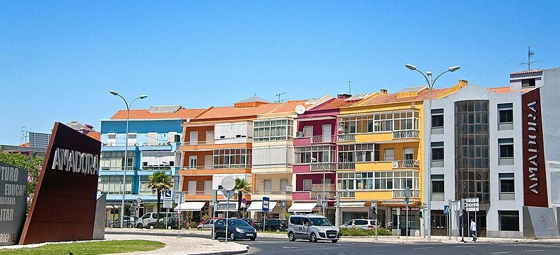

A minha Cidade
Home
Localização
Multimédia
Informação
Quizz
Viagem

Quizz
Nome:
Apelido:
Email:
Quizz sobre a Amadora
Indique uma cidade que faça fronteira com a Amadora
A Amadora pertence ao distrito de Lisboa?
Sim
Não
Qual o melhor horário para explorar o Parque Central da Amadora?
Quando planeja visitar a Amadora novamente?
Qual a cor mais abundante na Amadora?
Quantas vezes já visitou a Amadora?
Quantos McDonald's existem na Amadora?
2
3
4
Numa escala de 1 a 10, qual a sua satisfação ao visitar a Amadora?
Envie uma imagem do melhor pastel de nata que provou na Amadora:
Escreva uma opinião sobre a sua experiência na Amadora: